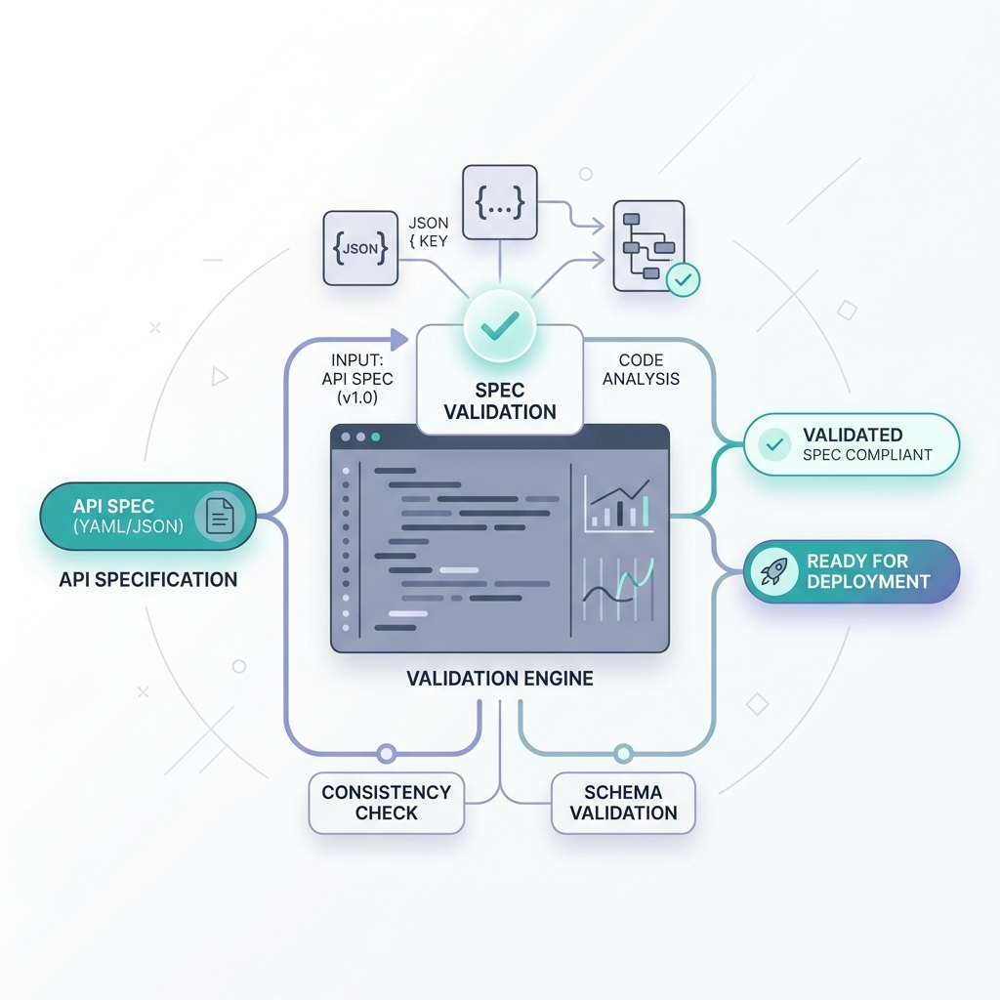
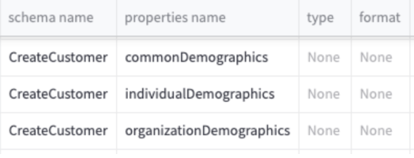
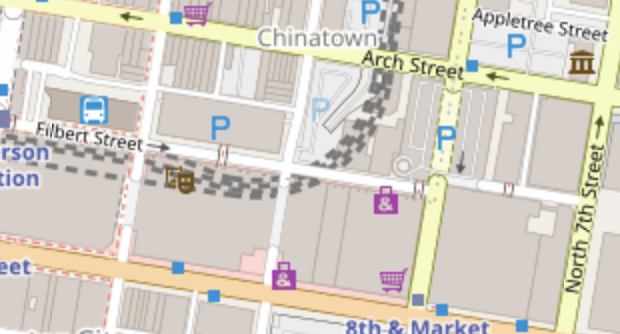

A robust validation engine for API specifications (OpenAPI, AsyncAPI, Excel) featuring custom rulesets, Spectral linting, and Neo4j Interface Inventory integration.
I hold the position of Program Architect at Krungsri (Bank of Ayudhya), which ranks among Thailand’s foremost financial institutions.

A robust validation engine for API specifications (OpenAPI, AsyncAPI, Excel) featuring custom rulesets, Spectral linting, and Neo4j Interface Inventory integration.

This web application parses Swagger files (JSON or YAML) and renders their REST API specifications in a clean, user-friendly graphical interface.

An interactive map-based analytics utility designed for processing complex geographical databases and rendering spatial intelligence models.